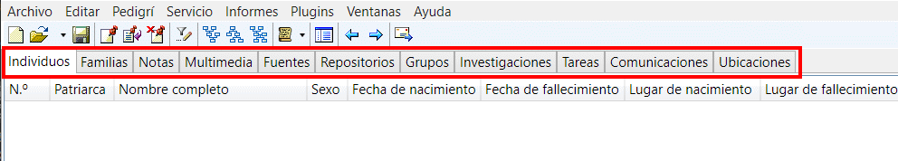

Una de las principales características de GEDKeeper es ofrecer una navegación eficiente.
Por ello, la ventana principal de GEDKeeper permite un acceso rápido a las seis principales categorías de registros con un área de resumen a la derecha de las listas—donde puede ver fácilmente información sobre un registro y utilizar hipervínculos para ir a otros registros relacionados.
Los siguientes tipos de registros son autocontenidos:
Para acceder a una lista de registros de cada tipo, se utilizan pestañas.

Las listas' columnas le muestran la información más importante.
Puede utilizar cualquier columna para ordenar una lista. Para ello, haga clic en una encabezado de columna.
El área de resumen de registros muestra enlaces a otros registros relacionados como texto azul azul (hipervínculos). Si hace clic en dicho texto, saltará a un registro correspondiente de esta u otra lista.